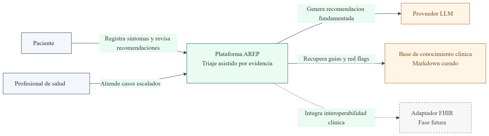
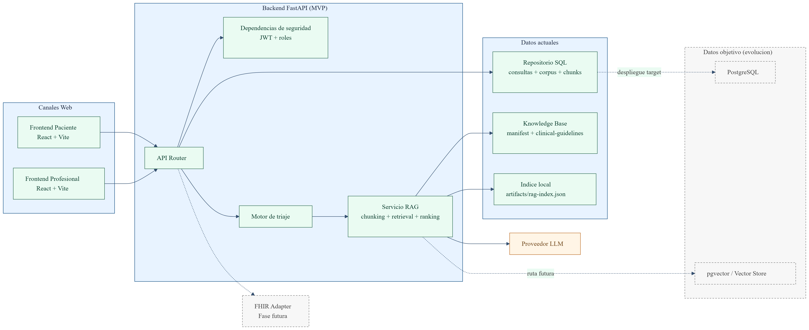
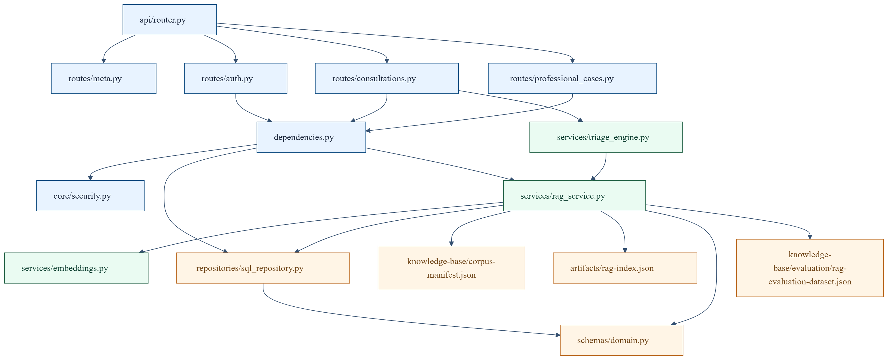
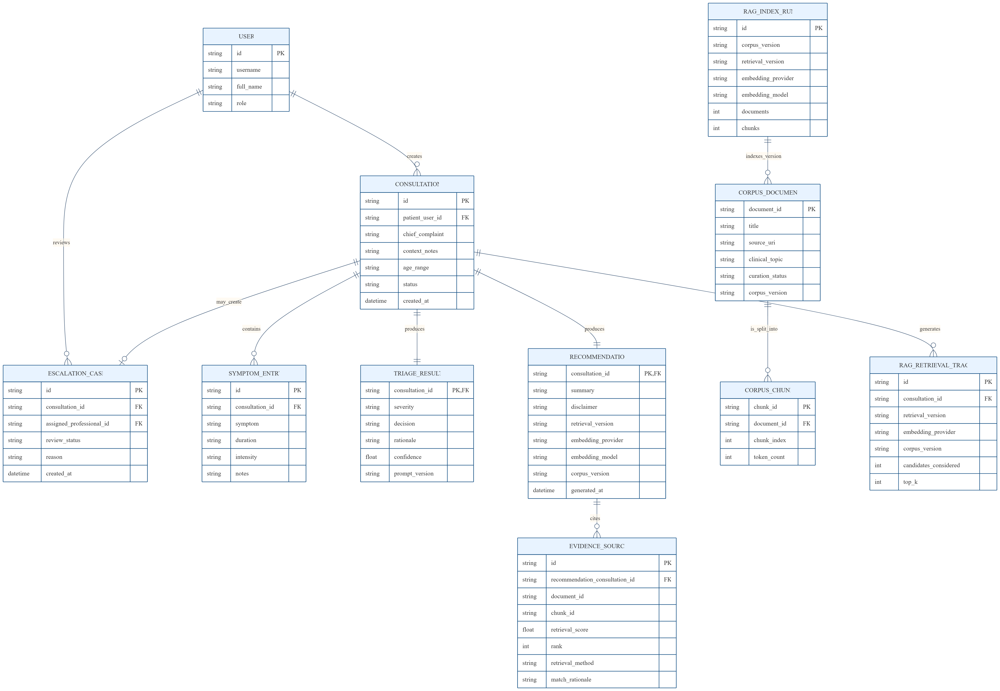
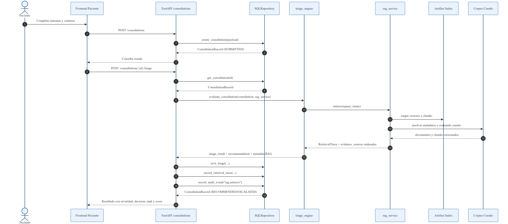
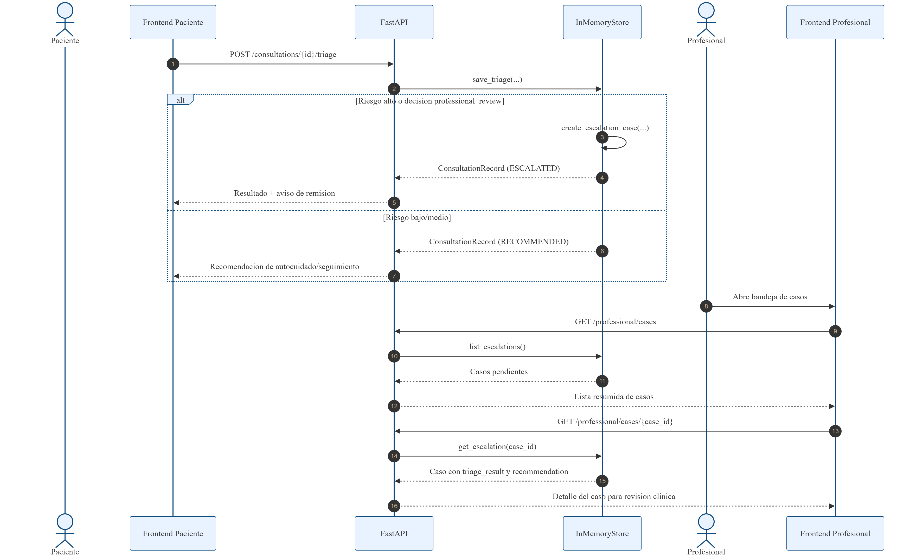
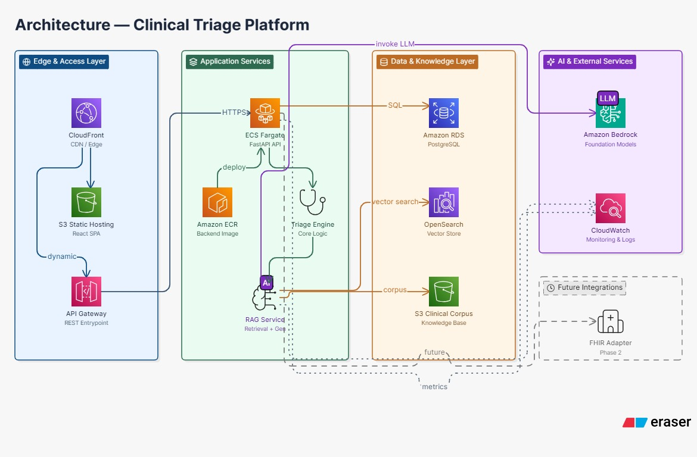

Plataforma de triaje médico asistido por IA con autenticación por roles, RAG trazable, observabilidad, pruebas automatizadas y despliegue público en AWS.
Orientación médica inicial con evidencia clara, escalamiento y supervisión humana.
Frontend + backend + corpus curado + RAG + trazabilidad + despliegue estático en AWS.
Un sistema demostrable, consistente y listo para sustentación académica/profesional.
La atención inicial necesita rapidez, evidencia y escalamiento claro sin perder trazabilidad.
AREP une intake, triage, RAG y panel profesional con un flujo coherente y defendible.
El repositorio muestra arquitectura, APIs, pruebas, métricas, despliegue y guion de demo.
En orientación médica inicial, el valor no es solo clasificar síntomas: también importa explicar la decisión, recuperar evidencia relevante y decidir cuándo escalar a un profesional.
Una plataforma que no solo responda, sino que permita explicar por qué responde así, con supervisión humana cuando el riesgo o la incertidumbre crecen.
“La recomendación debe ser útil, trazable y verificable; no una caja negra.”
Captura estructurada de síntomas, contexto y consulta clínica inicial.
FastAPI con autenticación JWT, auditoría, métricas, RAG y bandeja profesional.
Corpus curado, trazabilidad por fuente, scores y ranking visibles en la respuesta.
Local con Docker Compose y público en AWS para la demo final.
AREP convierte una descripción libre de síntomas en una recomendación clínica trazable y en un caso listo para revisión humana cuando hace falta.
SPA estática, rápida de iterar, fácil de desplegar y clara para dos perfiles de usuario.
Contratos REST, validación, JWT, métricas, auditoría y rutas para RAG y profesional.
Persistencia operativa de la demo y base para evolucionar a un despliegue más robusto.
Reproducción local y proyección cloud en S3, ECR, ECS y RDS.
El diseño separa claramente la experiencia del paciente, la atención profesional, la lógica clínica y la capa de evidencia para mantener una trazabilidad consistente.
Interfaz para dos roles, con experiencia diferenciada.
API, triage, autenticación, RAG, auditoría y métricas.
Postgres, corpus curado, índice RAG y evidencias.
Compose local y AWS como proyección/entrega pública.

El alcance externo del sistema y los actores que interactúan con AREP.
Permite explicar el problema de negocio sin entrar todavía al detalle de implementación.
AREP no es solo una UI: es una plataforma con actores, conocimiento clínico y proyección de interoperabilidad.

Divide la solución en UI, API, triage, RAG y persistencia.
Muestra cómo el sistema puede crecer sin mezclar responsabilidades.
La arquitectura mantiene el MVP local pero deja listo el salto a infraestructura gestionada.

Auth, consultas, triage, RAG, profesionales, seguridad y métricas.
Facilita pruebas, cambios localizados y evolución futura a microservicios si hiciera falta.
Primero entra la solicitud, luego el backend normaliza, clasifica, recupera evidencia y deja rastro.

Conectar la recomendación con datos auditables y reutilizables.
Las decisiones quedan ligadas a fuentes, versiones y estados del flujo.
“Cada consulta deja evidencia; cada evidencia tiene fuente; cada caso escalado mantiene contexto.”


AREP no reemplaza al profesional: le entrega un caso priorizado con evidencia, contexto y una recomendación justificable.
Formulario simple para iniciar una consulta, ver el nivel de severidad y revisar fuentes.
Bandeja de casos escalados, revisión de evidencia y cierre del caso con notas.
Se priorizan jerarquía visual, claridad de estados y exposición de la evidencia.
El frontend ya está publicado como hosting estático en AWS S3.
POST /auth/login y GET /auth/session.
POST /consultations, GET /consultations/{id}.
POST /consultations/{id}/triage y recommendation.
GET /professional/cases y cierre de casos.
/health, /ready, /metrics, /rag/status.
Logs, readiness y métricas permiten explicar y defender el comportamiento del sistema.
El backend no solo calcula respuestas: expone salud, depuración y trazabilidad para que la demo sea confiable y el discurso técnico sea verificable.

La interfaz pública ya está disponible en S3.
El repositorio contiene la infraestructura base para escalar backend, datos y observabilidad.
Localmente se trabaja con Compose; en cloud la ruta es S3 + ECS + RDS + ECR + Terraform.
Métrica documentada en la evaluación mínima del corpus.
El sistema recupera al menos una fuente esperada en todos los casos.
Hay pruebas automatizadas para backend, build frontend y flujo de extremo a extremo.
El sistema expone señales operativas claras para demo y soporte técnico.
Los resultados son suficientes para una entrega académica sólida: no prometen validación clínica, pero sí un comportamiento reproducible, trazable y defendible.
JWT firmado y separación de roles paciente/profesional.
Rate limiting y contratos claros reducen abuso accidental y errores de uso.
Auditoría y evidencia recuperada hacen auditable la recomendación.
El blueprint AWS deja lista la transición hacia servicios gestionados.
No hay validación clínica formal ni producción hospitalaria real.
Puede evolucionar hacia pgvector, ECS/EKS, secretos gestionados y observabilidad cloud.
Validación con expertos, pruebas con usuarios, hardening y ampliación del corpus/evaluación.
AREP quedó como una entrega académica seria: tiene una historia técnica coherente, una arquitectura visible, una demo desplegada en AWS, pruebas y métricas documentadas, y un guion claro para exponerla.
La idea no es venderlo como producto clínico productivo, sino como una base sólida, bien explicada y lista para evaluación final.
“AREP convierte un flujo de triaje asistido por IA en una solución trazable, desplegada y defendible; eso es exactamente lo que queríamos demostrar en la entrega final.”
Contexto, problema, propuesta, stack y visión general de la arquitectura.
Tiempo sugerido: 4–5 min.
Diagramas técnicos, backend, RAG, APIs, frontend y pruebas/resultados.
Tiempo sugerido: 5–6 min.
Despliegue AWS, seguridad, métricas, límites, futuro y conclusión.
Tiempo sugerido: 4–5 min.
1 a 6: título, narrativa, problema, solución, stack y visión general.
Mensaje centralExplicar por qué el problema importa, cómo AREP lo aborda y cuáles fueron las decisiones técnicas que dieron forma al proyecto.
Transición“Con el problema y la propuesta claros, ahora vemos cómo se materializa técnicamente en la arquitectura y en el flujo clínico.”
7 a 14: diagramas de contexto, contenedores, backend, datos, secuencias, UX, APIs y pruebas.
Mensaje centralDemostrar que la arquitectura no está dibujada “a mano alzada”: se ve reflejada en el repositorio, en los diagramas y en los endpoints reales.
Transición“Ya vimos cómo funciona y cómo está construido; ahora pasemos a la parte de despliegue, seguridad y cierre.”
15 a 19: AWS, calidad, seguridad, límites, futuro y conclusión.
Mensaje centralCerrar mostrando que AREP ya tiene una vía de despliegue, una URL pública, una postura clara sobre sus límites y un roadmap técnico serio.
Transición final“Con esto cerramos la propuesta y dejamos abiertas las preguntas.”
Porque el proyecto necesita evidencia recuperable, trazabilidad y una salida explicable.
No. Es una entrega académica sólida con una demo pública y un blueprint cloud bien definido.
El frontend público está en S3; el backend y la infraestructura tienen blueprint en el repositorio.
Son métricas de evaluación del RAG: recuperación esperada en top-1 y en top-k.
JWT, roles, auditoría, rate limiting y separación clara entre datos y evidencias.
Hardening, secrets gestionados, validación con expertos y evolución del vector store.
AREP quedó listo para evaluación final: visualmente sólido, técnicamente coherente, trazable y con despliegue público en AWS.